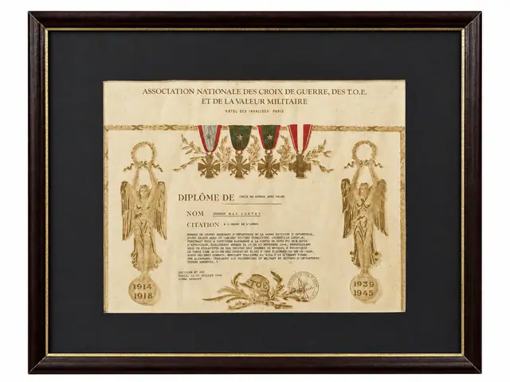
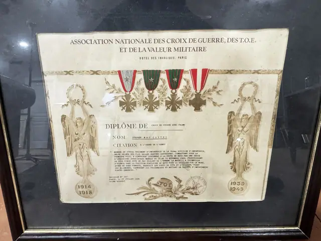
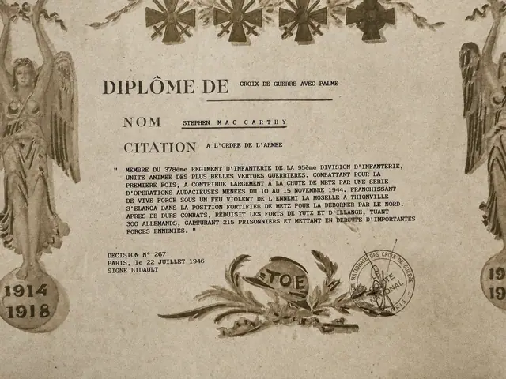

Documents
French Croix de Guerre avec Palme Diploma, 90th Infantry Division, 1946
· 1946
Price Upon Request



About the Item
Diplôme de Croix de Guerre avec Palme issued by the Association Nationale des Croix de Guerre, des T.O.E. et de la Valeur Militaire. Awarded to MAC CARTHY, 370th Infantry Regiment, 90th Infantry Division, for the action of 10 to 15 November 1944 at Metz and Thionville. Décision N° 267, Paris, July 1946. Bearing the 1914-1918 and 1939-1945 medallions. Framed under glass.
Details
- Creation Year:
- 1946
- Dimensions:
- Height: 17.75 in (45.09 cm)
Width: 21.5 in (54.61 cm)
outside of frame - Period:
- 20Th
- Condition:
- Offered in the condition shown in the photographs.
- Reference Number:
- VO-39